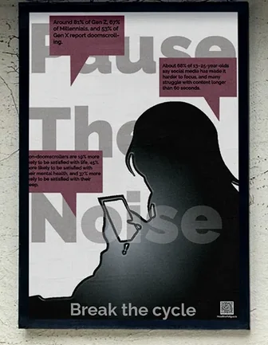
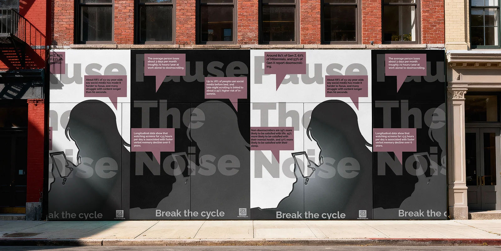
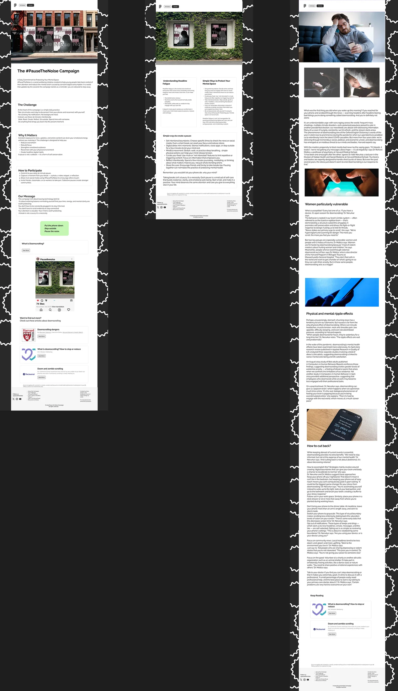

College project · Campaign design
Pause The Noise
A poster campaign and digital layouts built around the message “Break the cycle”.

Project brief
For a citizen design brief, I chose headline fatigue and doomscrolling. The campaign invites people to take a break from the stream of news on their phones.
My role
Designer (student)
Process & sketches
I developed contrasting poster versions and designed a companion website mock-up in Figma. A QR code on each poster connects the printed campaign to the digital resource.
Design decisions
Oversized words sit behind the phone users’ silhouettes. Pink speech panels interrupt the monochrome composition, drawing attention to the campaign’s message.
Outcome
The final series pairs street posters with a digital guide to taking a break from scrolling.
Design details





